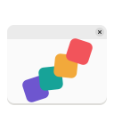
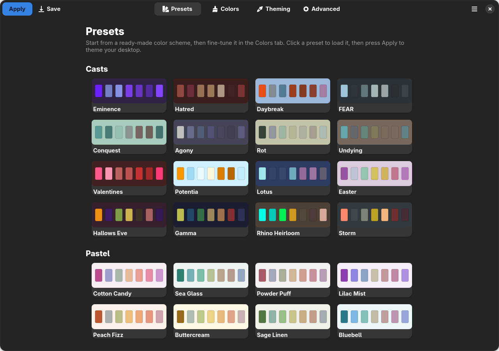
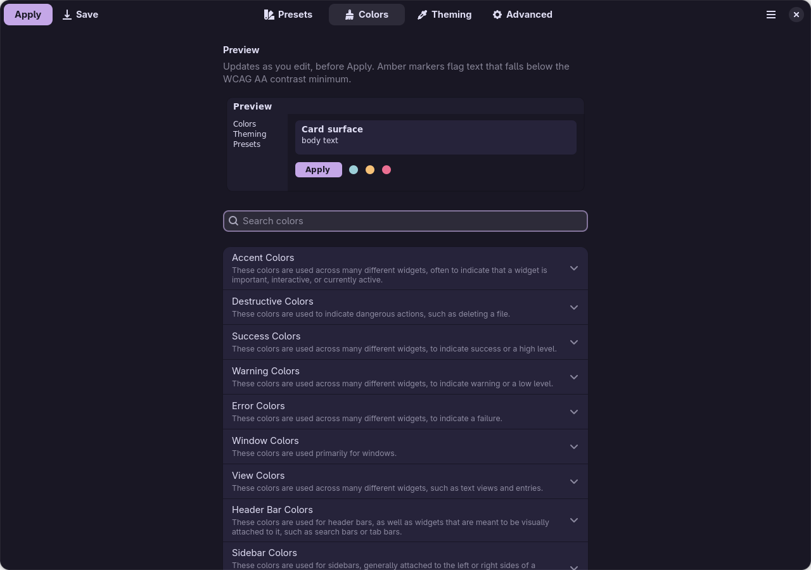
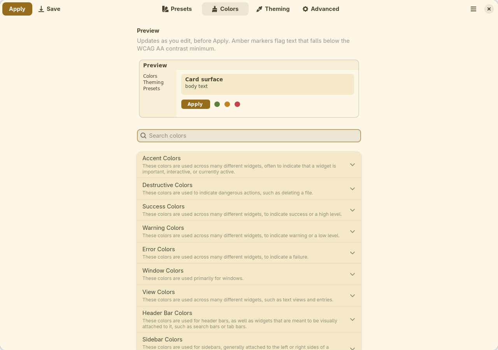
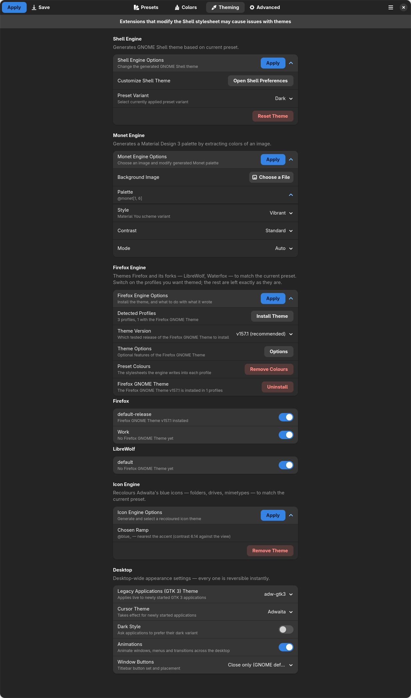

Version 0.7.1Change the look of Adwaita, with ease.
Pick one of 85 ready-made colour schemes or build your own, and apply it to Libadwaita, GTK 4 and GTK 3 apps, GNOME Shell, Firefox and your icons, without hand-editing a config file. A maintained fork of Gradience, on the current GNOME runtime.
Signed Flatpak repo — new releases arrive with flatpak update. Prefer a one-off file? Download the .flatpak bundle.

Two releases: 0.7.0 in October, 0.7.1 in November. The full changelog.
Red, green, amber and accent text is now measured against the surfaces it sits on before a preset is written. Anything below 4.5:1 keeps its hue and is made lighter or darker just enough to read. That fixed 248 unreadable labels across 68 of the bundled presets.
The Firefox engine offers the tested releases of firefox-gnome-theme. v157.1, the latest upstream release, is the recommended one, and v150 stays selectable for older setups.
Both apps draw controls over a dark backdrop of their own, and a preset with dark text left them unreadable. They are now light on dark under every preset.
The Shell engine says so when the User Themes extension is missing, turned off, or left out of date by a GNOME upgrade, which used to pass unnoticed.
The GTK 3 and GTK 4 stylesheets, the Shell theme and Firefox all write the same measured colours, so a label that reads in one place reads in the others.
The Desktop settings gain a switch for desktop-wide animations, next to dark style, cursor and window buttons.
The original was archived in June 2024. This picks it back up.
Builds and runs on the GNOME 51 runtime, and moves to each new one as part of a release, after a build and a look at the app on it.
Rebuilt on current libadwaita — ToolbarView, adaptive Breakpoint layout, boxed lists, and the newer row widgets.
85 colour schemes built in — Catppuccin, Gruvbox, Nord, Dracula, Rosé Pine, Everforest, Solarized, Tokyo Night and the full Arc and Matcha families, plus three original sets: Pastel, Neon and Casts.
Everything from upstream, plus the parts it never got round to.
Every scheme is a card tinted with its own background colour, showing its character hues. Click one to load it.
All 46 named Adwaita colours, in collapsible categories with a search box — picker or hex, whichever you prefer.
A schematic window at the top of the Colors tab redraws as you edit, before you apply anything — and marks any text that falls below the WCAG AA contrast minimum, so an unreadable pairing is visible immediately.
Role colours drawn as text are checked against the surfaces they sit on. One that falls below WCAG AA keeps its hue and moves just far enough to read; one that passes is written exactly as the preset has it. The GTK stylesheets, the Shell theme and Firefox all use the same measured colours.
The Monet engine turns any image into a full Material You scheme — choose from nine variants (Vibrant, Tonal Spot, Expressive…) and a contrast level.
Generate a matching Shell theme from the current preset — the panel, overview, Super+Tab switcher and quick settings repaint on a running session. No logging out. It recolours the stylesheet your installed Shell already ships, so it follows whatever GNOME you run rather than a list of known versions. If the User Themes extension it relies on is missing, off or out of date, the app tells you.
The Firefox engine writes the preset into the profiles you choose, through firefox-gnome-theme — toolbar, tabs, menus and the Library, for Firefox, LibreWolf and Waterfox alike. Each profile gets its own switch, and one you have already themed yourself is switched off on sight rather than painted over. No profile has the theme? The app offers to install a tested release for you, with a picker for which one, and removes it as cleanly. The theme's own nineteen optional features — OLED black, tabs as headerbar, system icons and the rest — are switches here too, instead of lines you hand-edit into a file the app also writes.
The icon engine recolours Adwaita's blue icons — folders, drives, mimetypes — through the preset's own palette, chosen by measured contrast so the folder never vanishes against its background. One click applies it, one removes it.
GTK 3 theme, cursor, dark style, animations and window buttons, right in the Theming tab — with a warning Tweaks never had, when a chosen GTK 3 theme is one your Flatpak apps cannot resolve.
Apply recognises a stylesheet it didn't write and offers to move it into your theme library instead of overwriting it — and every Apply is snapshotted, so Restore means restore.
Every colour button opens the preset's own palette first — nine ramps, named on hover — with the system dialog one click behind it.
An escape hatch for anything the colour variables can't express, per toolkit.
The window reflows to narrow widths, moving the view switcher to a bottom bar.
Pick a scheme, tune it, then apply it to each part of the desktop.



From the signed Flatpak repo — flatpak update keeps it current.
flatpak install --user https://superuser-miguel.github.io/Vivid_Gradience-repo/VividGradience.flatpakref
flatpak run io.github.superuser_miguel.VividGradiencePrefer a one-off file? A single-file .flatpak bundle is on GitHub Releases too, but it carries no auto-update — a newer release means reinstalling it. Vivid Gradience is not on Flathub and is distributed independently.
Native apps need nothing. Sandboxed ones need one permission. The full walkthrough is on the Get Set Up page.
Grant access to the GTK 4 config: sudo flatpak override --filesystem=xdg-config/gtk-4.0, or the same entry in Flatseal.
Install adw-gtk3, then grant xdg-config/gtk-3.0 the same way. And install the Flatpak theme extension — flatpak install flathub org.gtk.Gtk3theme.adw-gtk3. Without it your host apps get adw-gtk3 and every Flatpak silently falls back to stock Adwaita, because a sandbox cannot see /usr/share/themes. Why.
Install the User Themes extension, then use the Shell engine in the Theming tab. It repaints your running session — no logout.
Nothing here needs you to log out. Named colours are read once when an application starts, so the app you are looking at needs reopening — but the panel, overview, Super+Tab switcher and quick settings all update immediately. The full table is on the findings page.
What's next, in order. (The preset gallery, the five theme engines, measured colours, the theme library and signed auto-updating installs already shipped.)
.zip — fetch themes from inside the app, straight into the theme library the Advanced tab now manages.